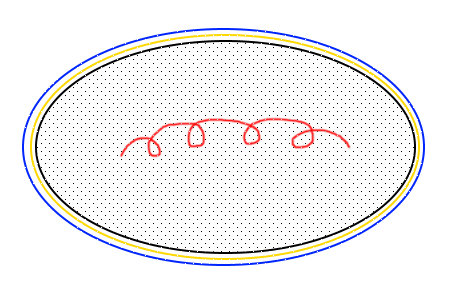
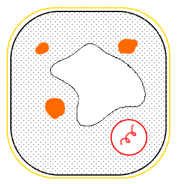

Biologie is al samengevat dus hier zijn de belangrijkste dingen:
biologie: leven, studie
biodiversiteit: verscheidenheid aan levende wezens
classificatiesystemen: ordeningssystemen
ecologie: oikos, logos, huishouden van de natuur
determineren: planten en dieren op naam brengen
inventariseren: aantallen van de leefkwaliteit van de omgeving
binomiale naam: bestaat uit twee delen
morfologische kenmerken: vormelijke kenmerken
flora: naslagwerk dat planten in een gebied beschrijft
indicatorsoorten: welbepaalde soorten die specifieke informatie geven
populatie: groep organismen van dezelfde soort die in hetzelfde gebied voorkomen
transect: lijn door een gebied dat we willen onderzoeken
habitat: het verblijfadres of verblijfplaats van een welbepaalde soort of individu
biotoop: ruime gebied waar een levensgemeenschap zich kan ontwikkelen en voortplanten
levensgemeenschap: alle planten en dieren in een bepaalde biotoop
ecologische niche: rol van een organisme in een bepaald gebied
Prokaryoot:

Eukaryoot:

Morfologische kenmerken zijn de uitdrukkingsvorm van de erfelijke code